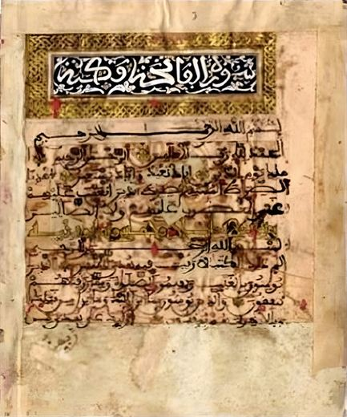

1
The Qur’an made for the library of Princess Maryam, daughter of Muhammad al-Shaykh
1 Shaʿban 967 AH · c. 27 April 1560 CE
In the reign of ʿAbd Allah al-Ghalib
Page of this Qur’an →SurvivesCompleteness unknownNot digitised
- Owner
- Written «برسم خزانة», “for the library” of Princess Maryam, daughter of the Saadian Sultan Muhammad al-Shaykh and sister of ʿAbd Allah al-Ghalib
- Copyist
- Not named
- Today
- Rabat, National Library, J 656
- Format
- Stiff brown paper, with the first and last pages of parchment; 17 lines; modern binding
The oldest dated Saadian Qur’an with a known owner that we have found. Its script is a fine Maghribi hand leaning towards mabsūṭ; the vowels are in red, shadda and sukūn sometimes in blue and sometimes in green, the hamza in yellow, and al-Habti’s pausal marks in bright green. The verse separators are gilded rosettes of different shapes for single verses, fifths and tenths.
At the end is a colophon in gold on lapis blue in six lines within a gilded frame, and two gilded pages. Mohamed Abdelhafid Khabta finds its decoration closest among Saadian Qur’ans to that of her brother ʿAbd Allah al-Ghalib’s Qur’an.
The sources available to us do not give its place of copying, and it is not digitised. Khabta published images of it.
Close-ups of the script (2)Click to enlarge →

The heading of Surat al-Fatiha · National Library, Rabat, J 656, after Khabta, fig. 54a · AI-enhanced

A page of the Qur’an · J 656, after Khabta, fig. 54b · AI-enhanced